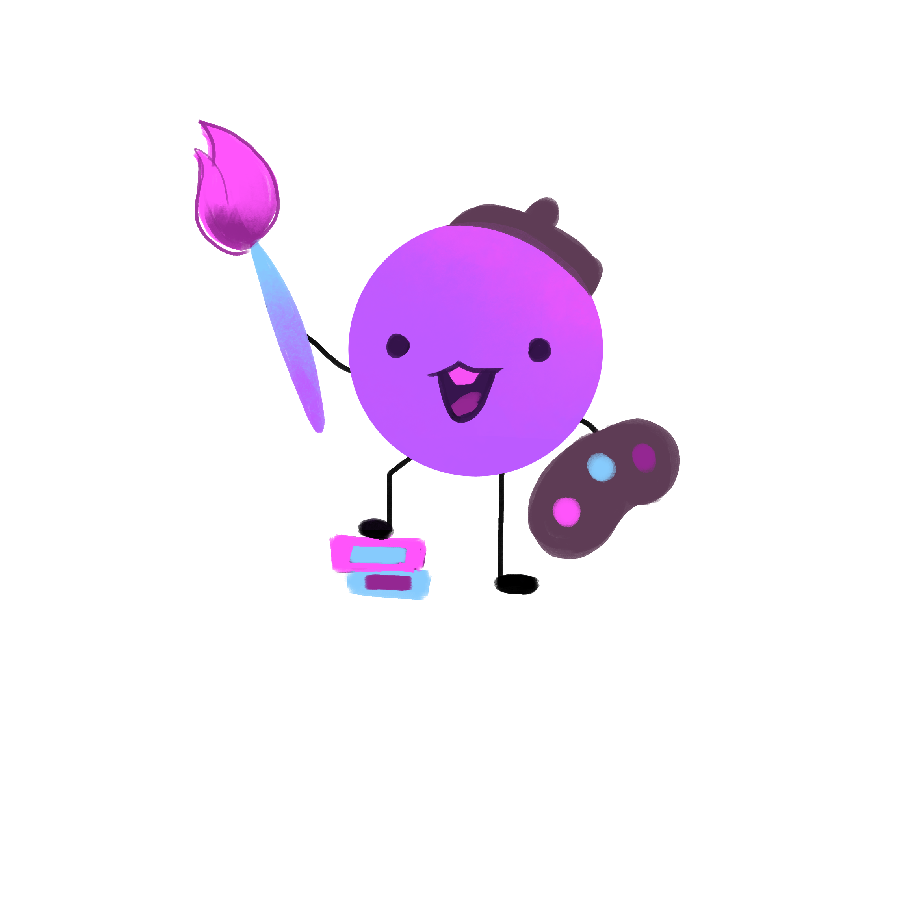

Encuentra las pistas
Recorre el espacio y localiza las obras que forman parte de la aventura.
✦ UNA AVENTURA EN EL CCU BUAP
El arte guarda secretos.
¿Te atreves a descubrirlos?
Explora el Andador Escultórico, descubre las historias detrás de sus obras y sigue las pistas para reunir los fragmentos de la Esencia Creativa.
✦ Experiencia WebAR · Puebla, México

EL MISTERIO
Una antigua energía conecta las obras del CCU. Sus fragmentos se han dispersado y solo quienes observan con curiosidad podrán encontrarlos.
TU MISIÓN COMO EXPLORADOR
La aventura combina el recorrido por el espacio cultural con pequeñas experiencias digitales.
Recorre el espacio y localiza las obras que forman parte de la aventura.
Escanea los marcadores para conocer las historias y curiosidades de cada pieza.
Resuelve los retos y reúne los fragmentos para completar tu colección.
¿LISTO PARA COMENZAR?
Prototipo académico en desarrollo. El reconocimiento actual utiliza una imagen oficial de demostración de MindAR. Las misiones, obras participantes y marcadores reales se integrarán después de verificar la información y contar con las autorizaciones correspondientes.